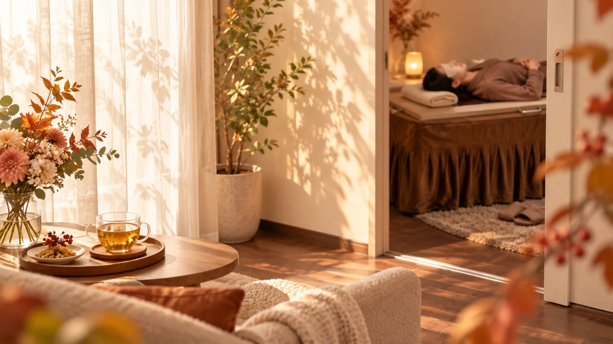
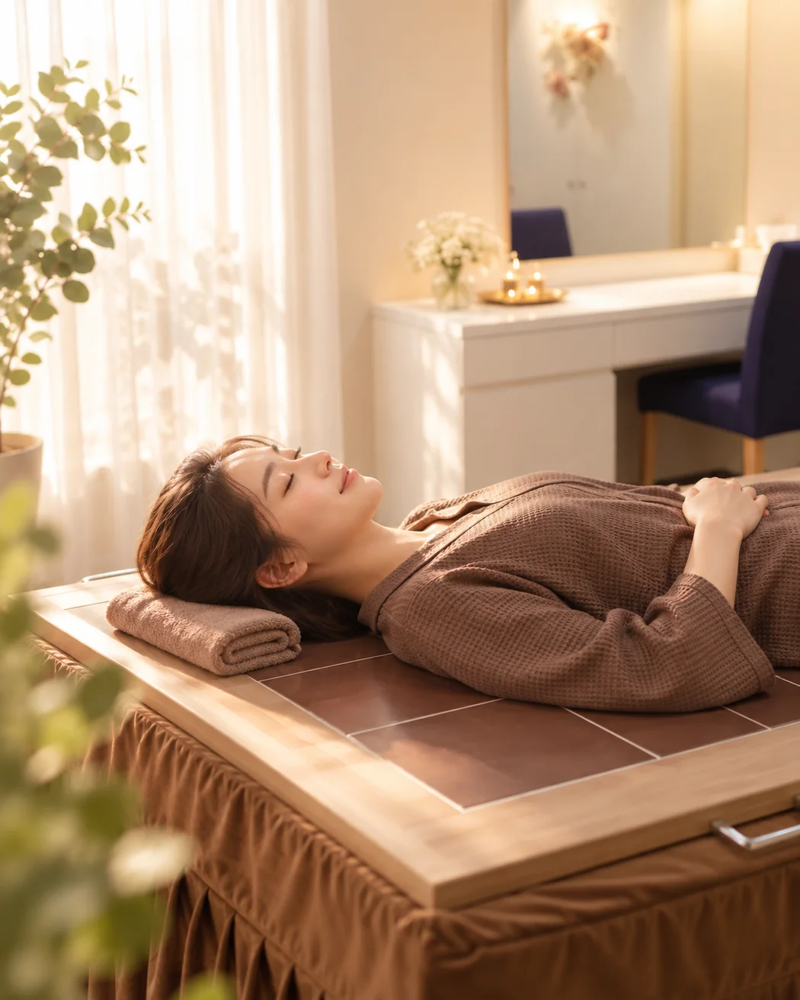

最近、ちゃんと休めていますか？
仕事、家事、予定。いつも誰かや何かを優先して、
自分のことはつい後回し。
寒くなる前の今だからこそ、身体を温めながら
「何もしない時間」をつくってみませんか。
今年の夏、
こんな毎日では
ありませんでしたか？

秋は、
“温める生活”へ
切り替える季節。
まだ真冬のように寒くはない。だからこそ、今は始めやすい。
夏の「冷やす生活」をそのまま冬へ持ち越すのではなく、
心地よく温まる時間を少しずつ暮らしの中へ。
そんな今だから、
陶板浴。
温められた陶板の上で、ただ横になる。
激しいことをする必要も、熱さを我慢し続ける必要もありません。
何もしない時間が、
いちばん贅沢かもしれない。
スマホを置いて、仕事も家事もいったん忘れて、
ただ温かさの中で横になる。
陶板浴は、「もっと頑張るため」ではなく、
自分を後回しにしないための時間にもなります。
初めて受ける人が
気になる5つのこと。
知らないものは、少し不安で当たり前。予約前に気になりやすいことを先にお答えします。
陶板浴の15分、30分、40分。
どう過ごす？
時間の長さよりも「自分のために何もしない時間をつくる」こと。こんな過ごし方があります。
まずは、気軽に。
初めての体験に。予定の合間にも入れやすく、「どんな感じ？」を知る時間として。
少し長めに、ひと息。
仕事や家事をいったん置いて、目を閉じたり、静かに考えごとを手放したり。
今日は、ゆっくり休む日。
予定に余裕がある日に。何もしない時間を、ちゃんと自分の予定として確保したいときに。
※過ごし方や利用時間は体調・店舗のご案内に合わせ、無理のない範囲でお楽しみください。
こんな日には、
陶板浴。
帰宅してもまだ頭が仕事モード。そんなとき、自分をオフにするきっかけとして。
平日が難しければ休日に。「空いたら休む」ではなく、休む時間を予定に入れて。
夏の冷やす生活から、冬の温める生活へ。暮らしの切り替えのタイミングに。
誰かのためではなく、自分のためだけに過ごす静かな時間として。
あなたに合う
陶板浴の通い方チェック
「陶板浴が必要か」を決めつける診断ではありません。 今の生活・気持ち・実際に通えそうなペースから、 無理なく続けやすい目安をご提案します。
「ここなら、ひとりで
ゆっくりできそう。」
写真からも、受ける時間を想像できるように。清潔感のある完全個室で、周りを気にせずお過ごしいただけます。
※掲載画像は実際の店舗写真を参考にしたイメージです。設備・内装は店舗により異なる場合があります。
お風呂やサウナと、
どう違う？
どれが一番、ではありません。自分が心地よく続けられるものを選ぶことが大切です。

はじめてでも、
思ったより気軽です。
予約・ご来店
空いている時間を選んでご予約。初めての方も気軽にどうぞ。
ご案内
過ごし方や時間をご説明します。不安なことはここでスタッフへ。
陶板浴
陶板の上で、15〜40分ほどゆっくり。完全個室なので自分のペースで。
余韻まで、自分の時間
終わったあとも慌てずに。心地よい時間の余韻まで含めてセルフケアに。
もっと日常に取り入れたい方には、
ご自宅に迎える選択肢も。
週4回以上など、かなり頻繁に取り入れたいと感じる方の中には、 ご自宅に陶板浴を迎えられる方もいらっしゃいます。